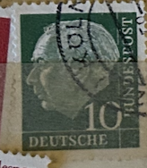
| SOURCE | TITLE| IMAGE MATCH | click to source page |
| Colnect | Germany, Federal Republic : Stamps [Year: 1961] [1/15] : Colnect 📮 | 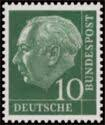 |
| HipStamp | Germany 1955 - U - Scott #708 | Europe - Germany & Colonies - Germany, General Issue Stamp / HipStamp | 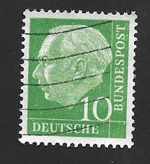 |
| eBay | Scott 708 from Germany - Used from 1954 -Dr. Theodore Huess | eBay | 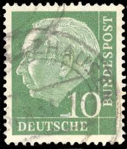 |
| eBay | German Stamps Emerald Green for sale | eBay | 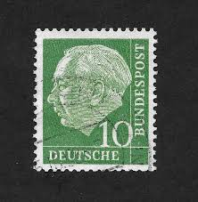 |
| eBay | Green Politicians European Stamps for sale | eBay | 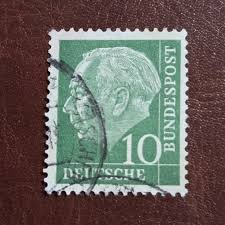 |
| eBay | German & Colonies Used Numeral Cancellation 1951-1960 Year of Issue Stamps for sale | eBay | 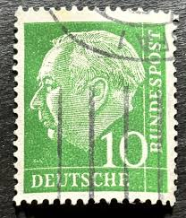 |
| eBay | Postkarte Bonn Universität Münster Bundeshaus 25.07.1957 gel_1 | eBay | 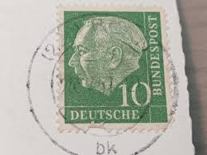 |
| Poppe Stamps | Poppe Stamps: German Federal Republic, 1954, 1109, Presidents - stamps for sale by theme and country | 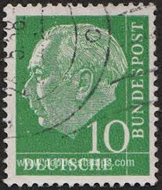 |
| Colnect | Stamp: Prof. Dr. Theodor Heuss (1884-1963), 1st German President (Germany, Federal Republic(Federal President Theodor Heuss) Mi:DE 183xWv,Sn:DE 708,Yt:DE 67,Sg:DE 1109,AFA:DE 1146,Un:DE 67 📮 | 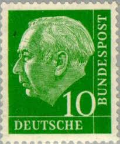 |
| eBay | Deutsche Bundespost 10 for sale | eBay |  |
| OnlineStampShop | Germany Postage Stamps | 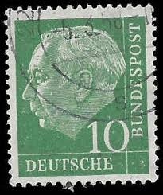 |
| 123RF | GDR- CIRCA 1956 A Stamp Printed In DDR East Germany Showing Sachs Schweiz Lilienstein, Circa 1956 Stock Photo, Picture and Royalty Free Image. Image 17269487. | 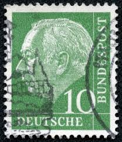 |
| Poppe Stamps | Poppe Stamps: German Federal Republic, 1954, 1109, Presidents - stamps for sale by theme and country | 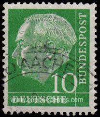 |
| iStock | German Postage Stamps Stock Photo - Download Image Now - Above, Black Background, Close-up - iStock | 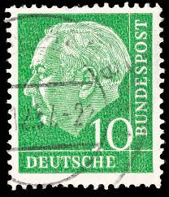 |
| Poppe Stamps | Poppe Stamps: German Federal Republic, 1954, 1109, Presidents - stamps for sale by theme and country | 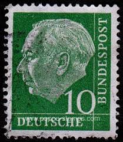 |
| eBay UK | West Germany - 1954 - Professor Dr. Th. Heuss - 10Pfg - Used - #05 | eBay UK | 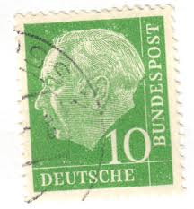 |
| pvoller.net | German Postal History and More | 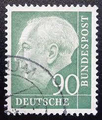 |
| Dreamstime.com | 639 German Professor Stock Photos - Free & Royalty-Free Stock Photos from Dreamstime | 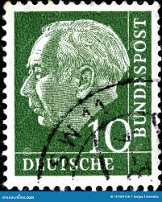 |
| HipStamp | Germany 708 1954 Used | Europe - Germany & Colonies - Germany, General Issue Stamp / HipStamp | 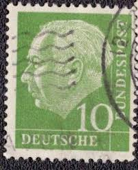 |
| Poppe Stamps | Poppe Stamps: German Federal Republic, 1954, 1109, Presidents - stamps for sale by theme and country | 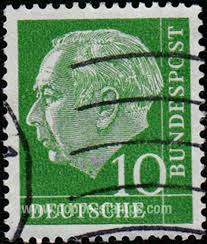 |
| Alamy | Postage stamps of the Deutsche Demokratische Republik. Stamp printed in the Deutsche Demokratische Republik Stock Photo - Alamy | 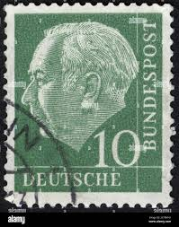 |
| Alamy | Germany - stamp 1954: Edition dedicated to First German President, shows Professor Dr. Theodor Heuss Stock Photo - Alamy | 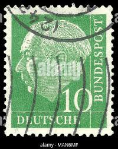 |
| HipStamp | Germany #708 10pf Pres Theodor Heuss | Europe - Germany & Colonies - Germany, General Issue Stamp / HipStamp | 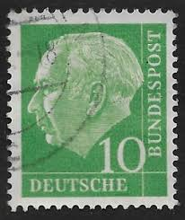 |
| Dreamstime.com | West German 50 Pfennig Stamp Commemorating the 500th Anniversary of the Landshuter Hochzeit 1475 Jousting Knights (1975) Editorial Photo - Image of duel, lance: 425918696 |  |
| Stamp Auction | Prices Realized | 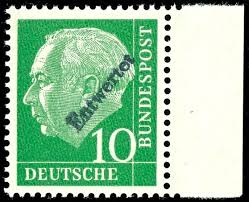 |
| Alamy | Postage stamp from the Federal Republic of Germany in the Federal President Theodor Heuss series issued in 1957 Stock Photo - Alamy | 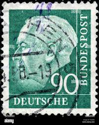 |
| Poppe Stamps | Poppe Stamps: German Federal Republic, 1954, 1122i, Presidents, Numbers - Values And Letters - Characters - stamps for sale by theme and country | 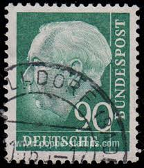 |
| Etsy | Postage Stamp Germany 10 Pfennig 1954 Michel 183 Cancelled - Etsy | 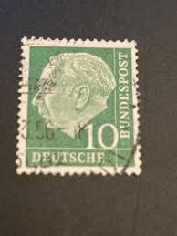 |
| Poppe Stamps | Poppe Stamps: German Federal Republic, 1954, 1122i, Presidents, Numbers - Values And Letters - Characters - stamps for sale by theme and country | 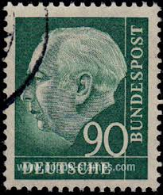 |
| Dreamstime.com | The First President of the Federal Republic of Germany Theodor Heuss Editorial Image - Image of estampilla, deliver: 218023215 | 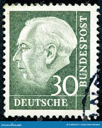 |
| HipStamp | Germany 706 - Used - 7pf Pres. Theodor Heuss (1954) (3) | Europe - Germany & Colonies - Germany, General Issue Stamp / HipStamp | 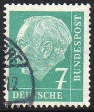 |
| Alamy | Theodor Heuss Portrait German President Federal Republic Democracy Leadership Blue! This distinguished German postage stamp from the Deutsche Bundespo Stock Photo - Alamy | 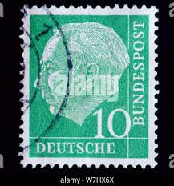 |
| Poppe Stamps | Poppe Stamps: German Federal Republic, 1954, 1122i, Presidents, Numbers - Values And Letters - Characters - stamps for sale by theme and country | 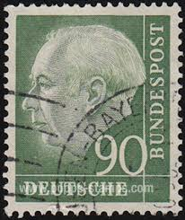 |
| eBay | Germany 2002 (2273) Mint never Hinged | eBay | 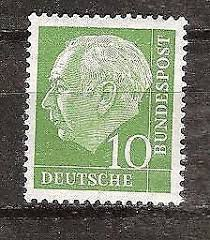 |
| Alamy | Envelope stamp germany hi-res stock photography and images - Page 18 - Alamy | 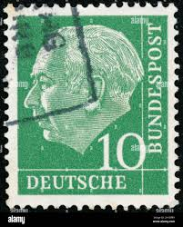 |
| Dreamstime.com | Prof Dr Theodor Heuss Stock Photos - Free & Royalty-Free Stock Photos from Dreamstime | 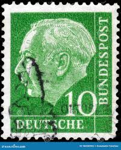 |
| Shutterstock | 2+ Thousand Deutsche Bundespost Royalty-Free Images, Stock Photos & Pictures | Shutterstock | 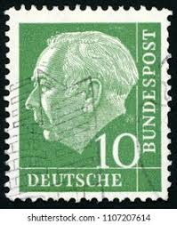 |
| Amazon.com | Amazon.com: FRD (FR.Germany) 181y,183y lumogen, Paper floureszierend unmounted Mint/Never hinged ** MNH 1954 President Heuss (I) (Stamps for Collectors) : Toys & Games | 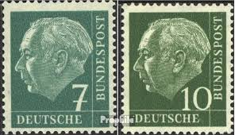 |
| eBay | Federal 183 Test Printing Stamp From Mint Signed Salomon 2/21076 | eBay | 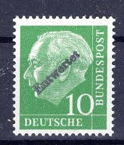 |
| Shutterstock | Karnal Haryana India -august 30th2022-closeup Commemorative Stock Photo 2195795657 | Shutterstock | 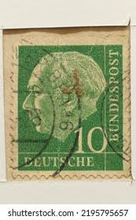 |
| Alamy | West Germany Postage Stamp - Prof. Dr. Theodor Heuss (1884-1963), 1st German President Stock Photo - Alamy | 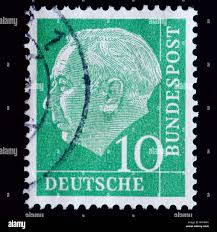 |
| iStock | Turkish Postage Stamp Stock Photo - Download Image Now - Antique, Black Background, Close-up - iStock | 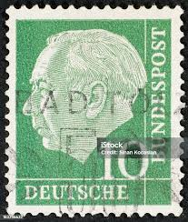 |
| eBay | GERMANY ~ Deuirches Reich ~ Pau Von Hindenburg~ Cancelled/Posted ~ c.1934 ~ C30 | eBay | 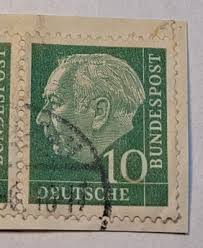 |
| eBay | GERMANY ~ Deutrche/Bundespost ~ 10 Saufend ~ Cancelled/Posted ~ c.1954 - 03 | eBay | 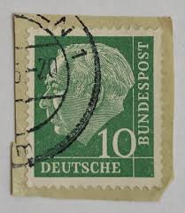 |
| HipStamp | MelbyPhilately / HipStamp | 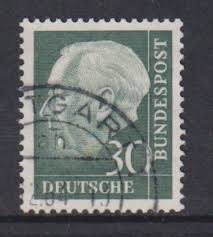 |
| Shutterstock | 2+ Hundred ドイツマルク Royalty-Free Images, Stock Photos & Pictures | Shutterstock | 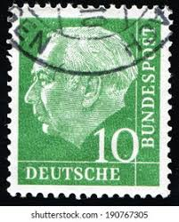 |
| Shutterstock | Green Letter Head: Over 3,883 Royalty-Free Licensable Stock Photos | Shutterstock | 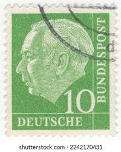 |
| Dreamstime.com | 153 Bundes Republic Stock Photos - Free & Royalty-Free Stock Photos from Dreamstime | 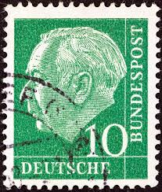 |
| ycjstamps.com | Stamp | 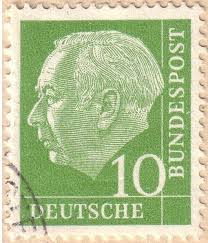 |
| influcast.com.br | German Empire 889 1944 Camaratheie Block The Reichspost -Stamps For Collectors- Horses... | 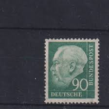 |
| Shutterstock | Definitive Stamps: Over 4,170 Royalty-Free Licensable Stock Photos | Shutterstock | 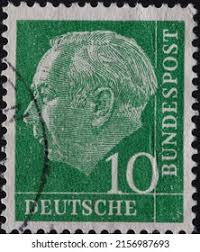 |
| Shutterstock | 6+ Thousand Deutsche Post Royalty-Free Images, Stock Photos & Pictures | Shutterstock | |
| Pngtree | 1000+ + HD Setem Gambar Dinding untuk Muat Turun Percuma di Pngtree | halaman 2 | |
| Alamy | First german postage stamp hi-res stock photography and images - Page 3 - Alamy | |
| Poppe Stamps | Poppe Stamps: German Federal Republic, 1954, 1109, Presidents - stamps for sale by theme and country | |
| Poppe Stamps | Poppe Stamps: German Federal Republic, 1954, 1108, Presidents - stamps for sale by theme and country | |
| Dreamstime.com | President Theodor Heuss Stock Photos - Free & Royalty-Free Stock Photos from Dreamstime | |
| allnumis.com | 10 Pfennig 1954 - Prof. Dr. Theodor Heuss (1884-1963), 1st German President, People - Personalities-man - Germany - Stamp - 52298 | |
| ebid.net | Germany 1954 - 10pfg green - Professor Dr. Th. Heuss - used 15 on eBid United States | 235659848 |